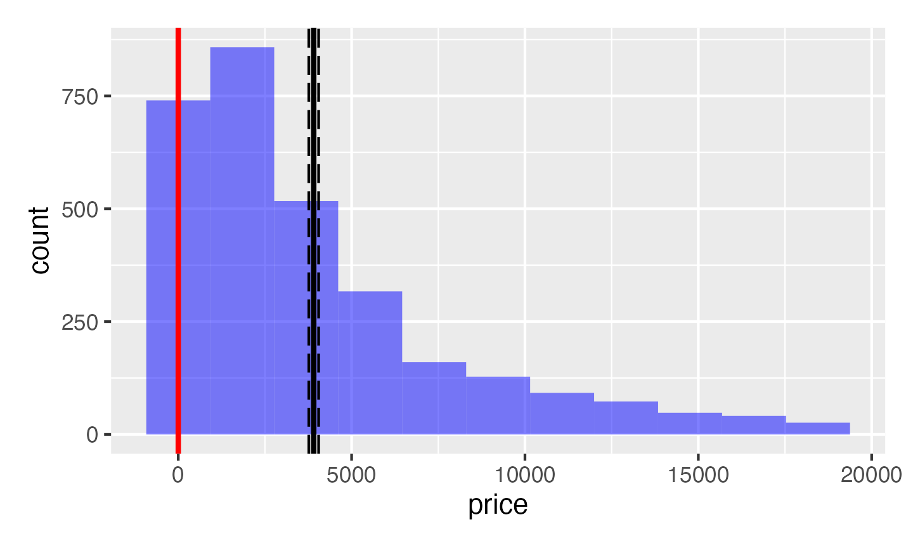
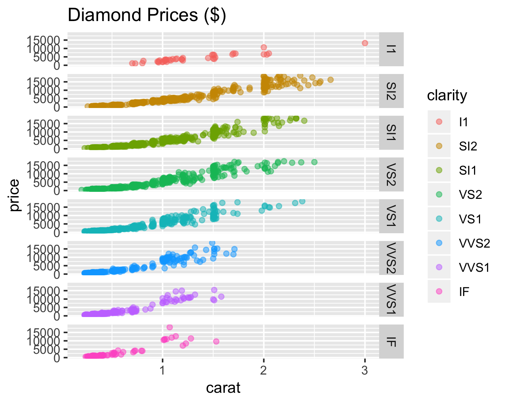
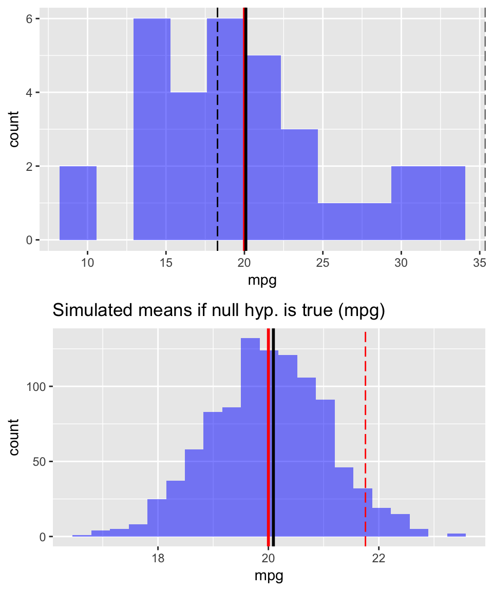
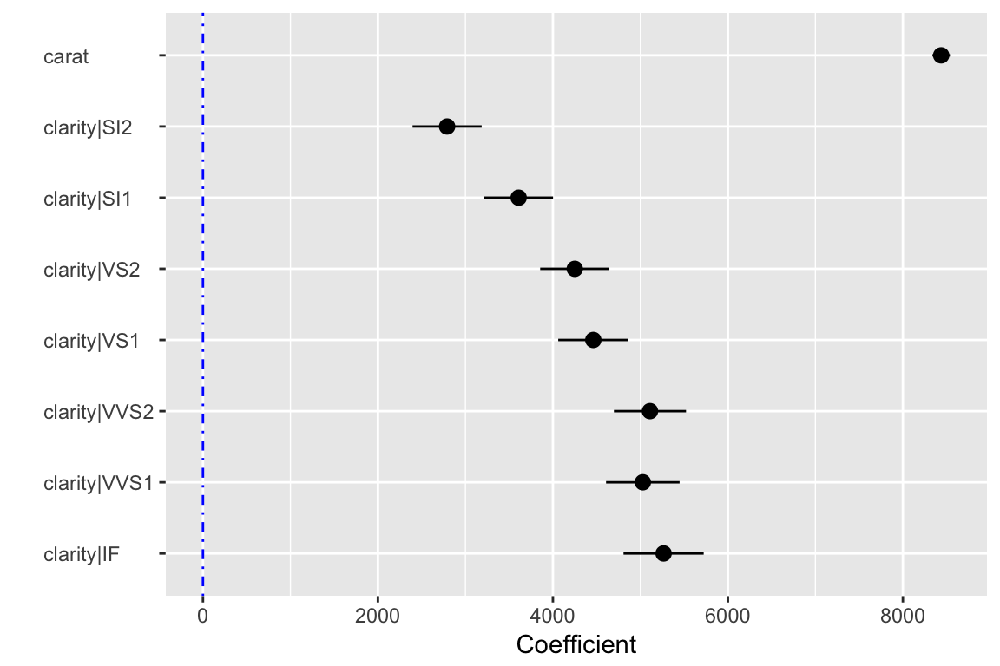
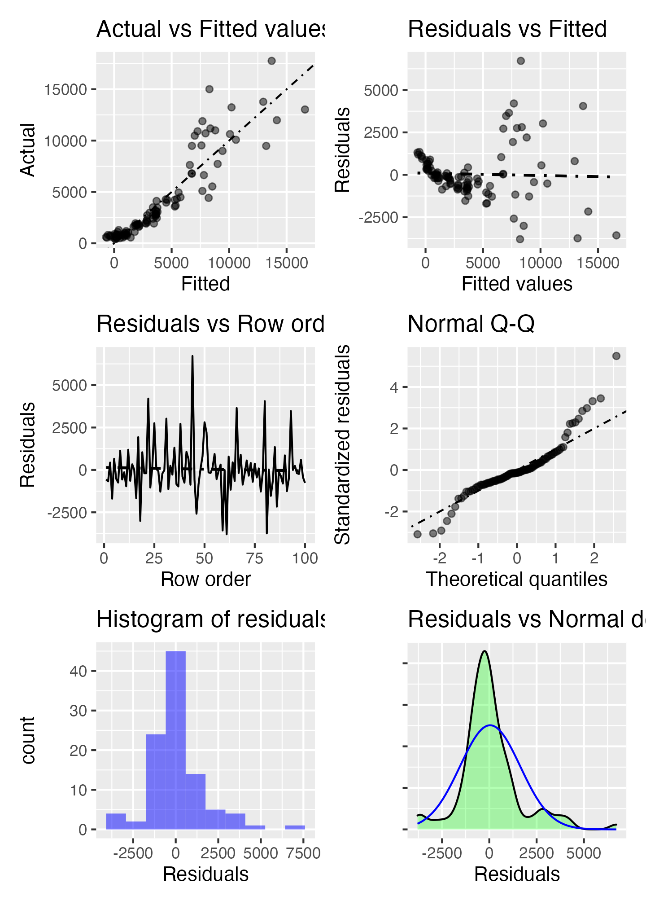
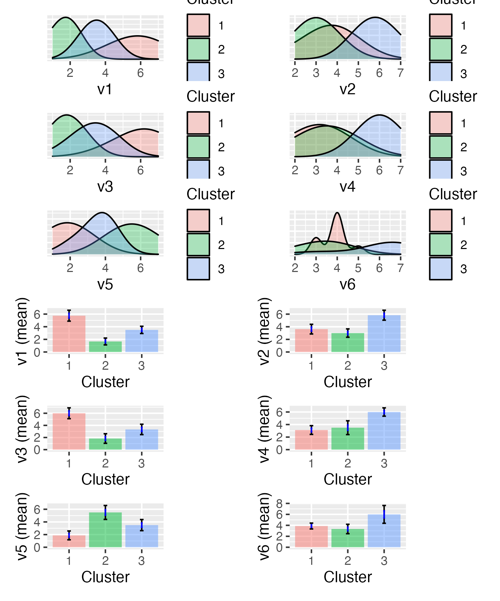

Programming with Radiant
Vincent R. Nijs, Rady School of Management (UCSD)
2020-04-10
Source:vignettes/programming.Rmd
programming.RmdRadiant’s goal is to provide access to the power of R for business analytics and data science. Although Radiant’s web-interface can handle many data and analysis tasks, you may prefer to write your own code. Radiant provides a bridge to programming in R(studio) by exporting the functions used for analysis. For example, you can run your analyses in Radiant and output the relevant function calls to an R or Rmarkdown document. Most pages in the app have an icon on the bottom left of your screen that you can click to generate a (reproducible) report with your analysis in the Report > Rmd (or Report > R) tab. As an alternative to clicking the icon you can also press ALT-enter on your keyboard. Click the Knit report button on the Report > Rmd page to render the report to HTML or press the Save report button to produce a Notebook, HTML, PDF, Word, or Rmarkdown file. Radiant’s function manuals can be viewed using the commands below:
help(package = radiant.data)
help(package = radiant.design)
help(package = radiant.basics)
help(package = radiant.model)
help(package = radiant.multivariate)You can also use Rstudio to render and edit Rmarkdown documents generated in Radiant. When you install and load Radiant it exports functions that can be called from R-code and/or an Rmarkdown document. For example, you can paste the commands below into the command console to get the same output as in the browser interface.
library(radiant)
data(diamonds, envir = environment())
result <- single_mean(diamonds, "price")
summary(result)Single mean test
Data : diamonds
Variable : price
Confidence: 0.95
Null hyp. : the mean of price = 0
Alt. hyp. : the mean of price is not equal to 0
mean n n_missing sd se me
3,907.186 3,000 0 3,956.915 72.243 141.651
diff se t.value p.value df 2.5% 97.5%
3907.186 72.243 54.084 < .001 2999 3765.535 4048.837 ***
Signif. codes: 0 '***' 0.001 '**' 0.01 '*' 0.05 '.' 0.1 ' ' 1plot(result)
You can also call functions for visualization (see below) and access help from the console using ?visualize
visualize(
diamonds,
xvar = "carat",
yvar = "price",
type = "scatter",
facet_row = "clarity",
color = "clarity",
labs = labs(title = "Diamond Prices ($)"),
custom = FALSE
) 
Use library(radiant) to load the library. To see the index of functions currently available in, for example, Radiant’s Model menu use the help(package = "radiant.model") command
Lets start by comparing the mean of a variable to a (population) value using R’s built-in mtcars dataset. This functionality is in the Radiant menu Basics > Means > Single mean. The analysis is conducted in function single_mean. Calling the summary method on the result object will show tabular output. Calling plot on the same result object will produce relevant plots.
result <- single_mean(
mtcars,
var = "mpg",
comp_value = 20,
alternative = "greater"
)
summary(result)Single mean test
Data : mtcars
Variable : mpg
Confidence: 0.95
Null hyp. : the mean of mpg = 20
Alt. hyp. : the mean of mpg is > 20
mean n n_missing sd se me
20.091 32 0 6.027 1.065 2.173
diff se t.value p.value df 5% 100%
0.091 1.065 0.085 0.466 31 18.284 Inf
Signif. codes: 0 '***' 0.001 '**' 0.01 '*' 0.05 '.' 0.1 ' ' 1plot(result, plots = "hist")
To compare the mean price of diamonds across different levels of clarity we can call the compare_means function:
result <- compare_means(
diamonds,
var1 = "clarity",
var2 = "price",
adjust = "bonf"
)
summary(result)Pairwise mean comparisons (t-test)
Data : diamonds
Variables : clarity, price
Samples : independent
Confidence: 0.95
Adjustment: Bonferroni
clarity mean n n_missing sd se me
I1 4,194.775 40 0 2,519.678 398.396 805.832
SI2 5,100.189 529 0 4,406.982 191.608 376.407
SI1 3,998.577 721 0 3,813.190 142.011 278.804
VS2 3,822.967 661 0 3,917.484 152.372 299.193
VS1 3,789.181 442 0 3,880.907 184.596 362.797
VVS2 3,337.820 284 0 3,932.706 233.363 459.348
VVS1 2,608.460 224 0 3,201.282 213.895 421.513
IF 2,411.697 99 0 3,330.560 334.734 664.268
Null hyp. Alt. hyp. diff p.value
I1 = SI2 I1 not equal to SI2 -905.414 1
I1 = SI1 I1 not equal to SI1 196.198 1
I1 = VS2 I1 not equal to VS2 371.808 1
I1 = VS1 I1 not equal to VS1 405.594 1
I1 = VVS2 I1 not equal to VVS2 856.955 1
I1 = VVS1 I1 not equal to VVS1 1586.315 0.023 *
I1 = IF I1 not equal to IF 1783.078 0.025 *
SI2 = SI1 SI2 not equal to SI1 1101.612 < .001 ***
SI2 = VS2 SI2 not equal to VS2 1277.222 < .001 ***
SI2 = VS1 SI2 not equal to VS1 1311.008 < .001 ***
SI2 = VVS2 SI2 not equal to VVS2 1762.369 < .001 ***
SI2 = VVS1 SI2 not equal to VVS1 2491.729 < .001 ***
SI2 = IF SI2 not equal to IF 2688.492 < .001 ***
SI1 = VS2 SI1 not equal to VS2 175.610 1
SI1 = VS1 SI1 not equal to VS1 209.396 1
SI1 = VVS2 SI1 not equal to VVS2 660.757 0.446
SI1 = VVS1 SI1 not equal to VVS1 1390.117 < .001 ***
SI1 = IF SI1 not equal to IF 1586.880 0.001 ***
VS2 = VS1 VS2 not equal to VS1 33.786 1
VS2 = VVS2 VS2 not equal to VVS2 485.146 1
VS2 = VVS1 VS2 not equal to VVS1 1214.507 < .001 ***
VS2 = IF VS2 not equal to IF 1411.270 0.005 **
VS1 = VVS2 VS1 not equal to VVS2 451.361 1
VS1 = VVS1 VS1 not equal to VVS1 1180.721 0.001 ***
VS1 = IF VS1 not equal to IF 1377.484 0.012 *
VVS2 = VVS1 VVS2 not equal to VVS1 729.361 0.606
VVS2 = IF VVS2 not equal to IF 926.123 0.68
VVS1 = IF VVS1 not equal to IF 196.763 1
Signif. codes: 0 '***' 0.001 '**' 0.01 '*' 0.05 '.' 0.1 ' ' 1
These datasets are available after loading the radiant library by using the data function. We can also load data through Radiant’s browser interface and then access the data from the console after closing the app. Start radiant using the command below and then click select Examples from the Load data of type dropdown in the Data > Manage tab. Then close the app by clicking the icon in the navbar and then clicking Stop. The datasets loaded through the web-interface are now available in the r_data environment as well. To use them directly in your code use attach(r_data).
## start radiant in Rstudio, load the example data, then click the power
## icon in the navigation bar and click on Stop
radiant::radiant()Because we already loaded the radiant library we already have access to all the data we need here. Lets use the compare_means function to evaluate salary data for professors of different ranks using:
result <- compare_means(salary, var1 = "rank", var2 = "salary")
summary(result)Pairwise mean comparisons (t-test)
Data : salary
Variables : rank, salary
Samples : independent
Confidence: 0.95
Adjustment: None
rank mean n n_missing sd se me
AsstProf 80,775.985 67 0 8,174.113 998.627 1,993.823
AssocProf 93,876.438 64 0 13,831.700 1,728.962 3,455.056
Prof 126,772.109 266 0 27,718.675 1,699.541 3,346.322
Null hyp. Alt. hyp. diff p.value
AsstProf = AssocProf AsstProf not equal to AssocProf -13100.45 < .001 ***
AsstProf = Prof AsstProf not equal to Prof -45996.12 < .001 ***
AssocProf = Prof AssocProf not equal to Prof -32895.67 < .001 ***
Signif. codes: 0 '***' 0.001 '**' 0.01 '*' 0.05 '.' 0.1 ' ' 1plot(result)
We can also run regressions and get output in a format that would require quite a few lines of code to produce from scratch:
result <- regress(diamonds, rvar = "price", evar = c("carat","clarity"))
summary(result, sum_check = "confint")Linear regression (OLS)
Data : diamonds
Response variable : price
Explanatory variables: carat, clarity
Null hyp.: the effect of x on price is zero
Alt. hyp.: the effect of x on price is not zero
coefficient std.error t.value p.value
(Intercept) -6780.993 204.952 -33.086 < .001 ***
carat 8438.030 51.101 165.125 < .001 ***
clarity|SI2 2790.760 201.395 13.857 < .001 ***
clarity|SI1 3608.531 200.508 17.997 < .001 ***
clarity|VS2 4249.906 201.607 21.080 < .001 ***
clarity|VS1 4461.956 204.592 21.809 < .001 ***
clarity|VVS2 5109.476 210.207 24.307 < .001 ***
clarity|VVS1 5027.669 214.251 23.466 < .001 ***
clarity|IF 5265.170 233.658 22.534 < .001 ***
Signif. codes: 0 '***' 0.001 '**' 0.01 '*' 0.05 '.' 0.1 ' ' 1
R-squared: 0.904, Adjusted R-squared: 0.904
F-statistic: 3530.024 df(8,2991), p.value < .001
Nr obs: 3,000
coefficient 2.5% 97.5% +/-
(Intercept) -6780.993 -7182.855 -6379.131 401.862
carat 8438.030 8337.834 8538.227 100.196
clarity|SI2 2790.760 2395.873 3185.646 394.886
clarity|SI1 3608.531 3215.384 4001.679 393.148
clarity|VS2 4249.906 3854.604 4645.208 395.302
clarity|VS1 4461.956 4060.801 4863.111 401.155
clarity|VVS2 5109.476 4697.311 5521.640 412.165
clarity|VVS1 5027.669 4607.574 5447.764 420.095
clarity|IF 5265.170 4807.024 5723.317 458.147Linear regression (OLS)
Data : diamonds
Response variable : price
Explanatory variables: carat, clarity
Interval : confidence
Prediction command : carat = 1:10
clarity carat Prediction 2.5% 97.5% +/-
SI1 1 5265.569 5174.776 5356.362 90.793
SI1 2 13703.599 13557.662 13849.536 145.937
SI1 3 22141.629 21908.326 22374.933 233.303
SI1 4 30579.660 30251.571 30907.748 328.088
SI1 5 39017.690 38592.329 39443.051 425.361
SI1 6 47455.720 46931.983 47979.458 523.738
SI1 7 55893.751 55271.056 56516.445 622.695
SI1 8 64331.781 63609.787 65053.775 721.994
SI1 9 72769.811 71948.301 73591.322 821.511
SI1 10 81207.842 80286.667 82129.017 921.175plot(result, plots = "coef")
plot(result, plots = "dashboard", lines = "line", nrobs = 100)
As another example, imagine that you want to segment a sample of respondents based on their toothpaste attitudes. Below is the required code to produce results using functions from the Radiant package. For help on the commands and options for cluster analysis use ?hclus, ?plot.hclus, and ?klus. See also the Radiant function manuals linked above.
## run hierarchical cluster analysis on the shopping data, variables v1 through v6
result <- hclus(shopping, "v1:v6")
## summary - not much here - plots are more important
summary(result)Hierarchical cluster analysis
Data : shopping
Variables : v1, v2, v3, v4, v5, v6
Method : ward.D
Distance : sq.euclidian
Standardize : TRUE
Observations: 20 ## check the help file on how to plot results from hierarchical cluster
## analysis default plots
## it looks like there is a big jump in overall within-cluster
## heterogeneity in the step from 3 to 2 segments
plot(result)
## show the dendrogram with cutoff at 0.05
plot(result, plots = "dendro", cutoff = 0.05)## plots created above suggest 3 clusters may be most appropriate
## use kclus to create the clusters
## generate output and store cluster membership
result <- kclus(shopping, vars = "v1:v6", nr_clus = 3)
summary(result)K-means cluster analysis
Data : shopping
Variables : v1, v2, v3, v4, v5, v6
Clustering by: K-means
HC method : ward.D
HC distance : sq.euclidian
Standardize : TRUE
Observations : 20
Generated : 3 clusters of sizes 8 | 6 | 6
Cluster means:
v1 v2 v3 v4 v5 v6
Cluster 1 5.75 3.62 6.00 3.12 1.88 3.88
Cluster 2 1.67 3.00 1.83 3.50 5.50 3.33
Cluster 3 3.50 5.83 3.33 6.00 3.50 6.00
Percentage of within cluster heterogeneity accounted for by each cluster:
Cluster 1 40.31%
Cluster 2 25.98%
Cluster 3 33.71%
Between cluster heterogeneity accounts for 73.93% of the
total heterogeneity in the data (higher is better)
shopping <- store(shopping, result, name = "clus")
## was the data really changed?
head(shopping)# A tibble: 6 x 8
id v1 v2 v3 v4 v5 v6 clus
<int> <int> <int> <int> <int> <int> <int> <fct>
1 1 6 4 7 3 2 3 1
2 2 2 3 1 4 5 4 2
3 3 7 2 6 4 1 3 1
4 4 4 6 4 5 3 6 3
5 5 1 3 2 2 6 4 2
6 6 6 4 6 3 3 4 1 See if you can reproduce this output in the radiant browser interface. Start Radiant from the Addins dropdown in Rstudio.